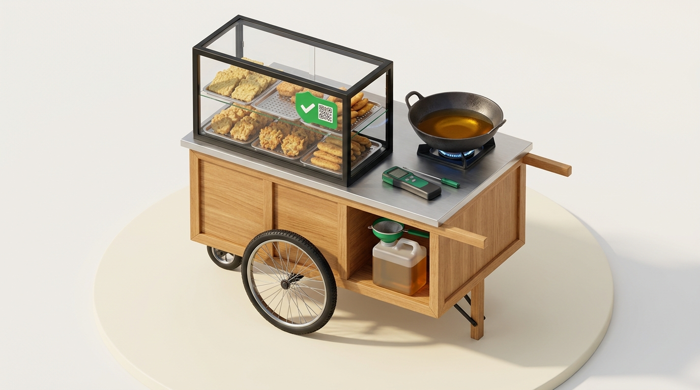
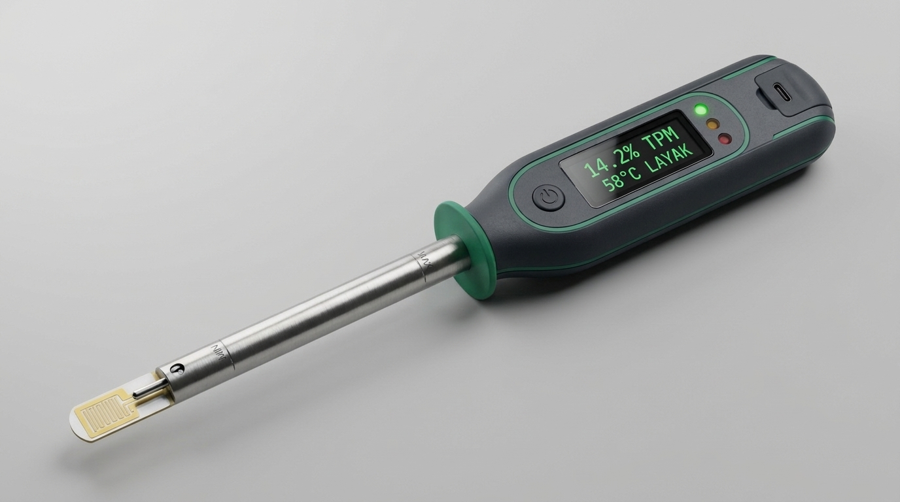
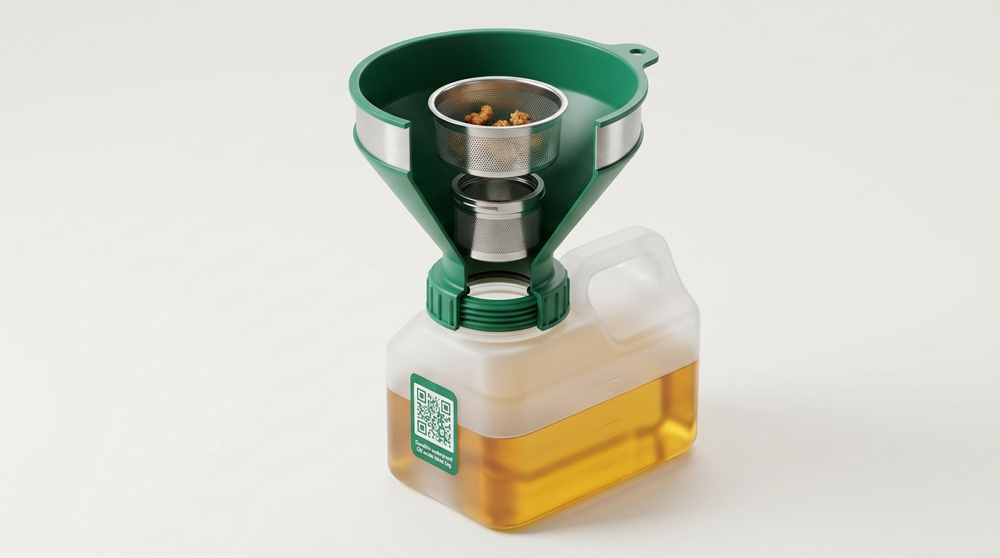
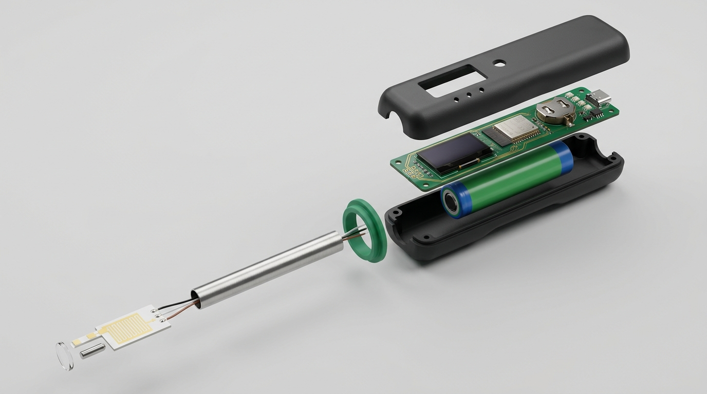

Ekosistem Sirkular & Cyber-Physical Minyak Jelantah UMKM
Menghubungkan alat uji kelayakan minyak terjangkau di wajan gorengan langsung dengan penarikan jelantah bersih untuk rantai pasok Biodiesel/SAF.

Sudah Ada Sosialisasi & Pengepul, Tapi Kenapa UMKM Tetap Tidak Ikut?
3 dampak besar terjadi bersamaan karena 5 hambatan nyata di gerobak gorengan belum pernah dipecahkan secara utuh.
Probe TPM Hibrida: Akurat di Minyak Berbumbu, Harga Rp495rb

Buktikan Sendiri: Kenapa Sensor Hibrida Mengalahkan Sensor Optik Lama
Corong Pre-Filter 2-Tahap: Nol Listrik, Jelantah Langsung MIU < 2%

Arsitektur Internal Probe: Dari Elektroda Celup ke ESP32-C3

| Subsistem | Pin ESP32-C3 | Peran |
|---|---|---|
| Kapasitif | GPIO 4 (PCNT) | Baca frekuensi TLC555 (100% lokal) |
| Suhu + Optik | GPIO 5 · I2C | DS18B20 ATC + kekeruhan TSL2561 |
| Otak + RTC | I2C (8/9) · Flash | Hitung %TPM + 1.000 log DS3231 |
| UI + Daya | GPIO 2,3,6,7,10 | OLED + LED H/K/M + 18650 USB-C |
Bisa Dirakit Sendiri Tanpa Impor, Berdiri di Atas Riset Ilmiah Nyata
4 Langkah Rakit Nyata (Surabaya / Tokopedia):
FDC1004 dengan IC TLC555/NE555 + ESP32 PCNT (BoM lokal jadi Rp375rb/unit; FDC1004 via JLCPCB jadi opsi upgrade).
Testo 270/FFA.
5 Acuan Jurnal Ilmiah Terverifikasi:
Testo 270 (R² ≈ 0,83–0,95).
4,669 pada 100 Hz) serta pemakaian sensor kapasitif pada bahan baku biodiesel.
Siklus Tertutup Hulu–Hilir + Keunggulan Nyata atas Pesaing
Uji 40–80°C
Celup <10 dtk; log offline tersimpan otomatis (batch-sync).
Saring 2-Tahap
TPM ≥24% dituang lewat corong kolong gerobak (MIU <2%).
Jemput Micro-Hub
Agregasi 10–15 gerobak (≥100 L/mg) + sync Wi-Fi otomatis.
Tunai / Tukar
Bayar QRIS/tunai di tempat atau tukar minyak baru grosir.
ISCC + Trust QR
Data %TPM jadi bukti anti-fraud ISCC + stiker gerobak aktif.
| Pesaing Eksisting | Harga / Model | Celah Utama | Jawaban Sistem Kita |
|---|---|---|---|
| Testo 270 / ATAGO | Rp11–19,5 jt | Mustahil dibeli UMKM | BoM Rp375–495rb · Pinjam pakai Rp0 |
| UCOllect (Pertamina) | Rp4–6rb/L (SPBU) | Harus angkut ke SPBU; tolak kerak tepung | Pre-Filter gerobak + jemput kolektif |
| TUKR / Greenia | Rp5–7rb/L (Horeka) | Gerobak mikro terlalu kecil dijemput 1-1 | Micro-Hub agregator jadi pemasok mereka |
| Tengkulak Informal | Tunai di gerobak | Nol ISCC, rawan minyak oplosan | Tunai/tukar minyak + jalur resmi + Trust Badge |
Rincian BoM (Lokal Rp375rb / Upgrade Rp495rb) & Simulasi Balik Modal
Komponen 1 Unit Probe (Semua < Rp1 jt)
Lokal Rp375rb · FDC Rp495rbTerukur Objektif di 3 Pilar & Realistis Dikerjakan Sebelum Maret 2027
Produk fisik 1:1 mudah didemonstrasikan di depan juri PKP2/PIMNAS (selaras 95% finalis PKM-KI 2026).
Uji 10–15 Gerobak Surabaya
Ukur liter jelantah terselamatkan, penurunan pemakaian TPM >24%, & skor UEQ-S (target Good/Excellent).
Kalibrasi vs Testo 270
Galat ≤ ±2% TPM (R² ≥ 0,92), waktu ukur <10 dtk, guard suhu 40–80°C, efisiensi saring ≥90% (MIU <2%).
Standar Pangan & ISCC
Ambang TPM 24%, SNI 7709:2019, dielektrik–ATC, ISCC (Point of Origin / Anti-Fraud), & UU PDP.
Langkah Kunci Jika Tim Sepakat Memilih Ide Ini:
1) Konfirmasi izin ganti topik ke Bu Arni · 2) Ajak 1 anggota/konsultasi Teknik Elektro atau Teknologi Pangan untuk kalibrasi Testo 270 / titrasi FFA · 3) Rakit prototipe minggu pertama pakai TLC555 lokal + kunci 1 sentra deep-fry & pengepul Surabaya.